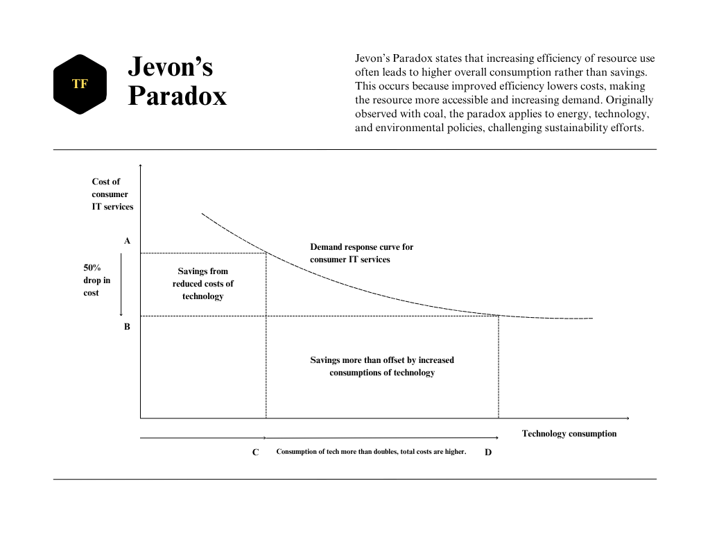
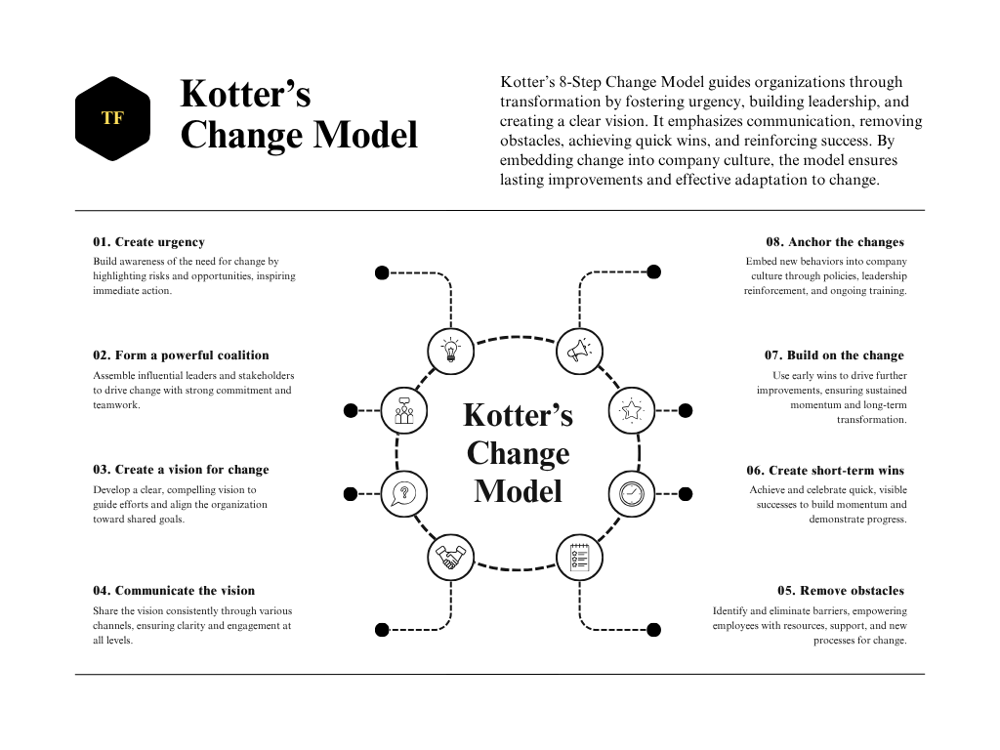
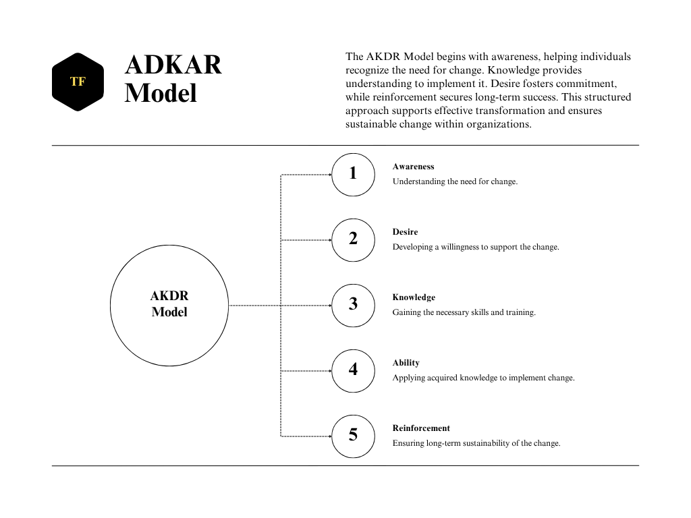

Generative AI & Change (Report) Adaptation
Generative AI boosts efficiency, but leaders face change management stress—balancing ethics, privacy, reputation, and workplace harmony. Would this be the change?
SECTION I
The rapid advancement of generative artificial intelligence has offered more efficacy for almost all organizations, whether a street vendor, newspaper stand, restaurant, consultancy firm, government agency, or a large corporation like Penguin Publishing. The task-driven positions previously implemented by particular employees or departments have become the responsibility of AI nowadays, given its convenience, precision, and accuracy. However, bringing with it a new set of worries and stressors to CEOs and leaders, as their concerns focused more on adaptability, i.e., change, they were put on a search for a cold call for advancement, as they struggled with securing the organizational reputation and privacy, serving the community and integrity, and balancing the employee and management process, connection, and harmony.

pitch ...
Taking Jevon's paradox into consideration, we can find a better explanation of how this change would impact an organization, be it positive or negative. Yet, even from a negative point of view, according to the paradox, there could be potential positivity among them to be gained and vice versa.
Jevon's paradox — This suggests that in 1865 when the steam engines were introduced, it did not lead to a decrease in coal use in British factories, but increased instead due to the cost of coal crashing and the demand rising.
In the present day, applying Jevon's theory to generative AI adoption, it is obvious to understand that although AI models like OpenAI and DeepSeek are cheaper to integrate and operate in a business, data privacy will not be as how it used to be before; on the other hand, to adapt to a customized, premium AI model to an organization, it might cost tenfold of the per annum wage to handle an employee due to the extensive high-performance hardware and software installation and maintenance costs, thus eventually leading the management to learn that keeping the employees in their place while offering them training to utilize fundamental AI integration with company tasks would be ideal and efficient.
Navigating change
In basic AI models, many benefits could be highlighted on an internal organizational scale when navigating AI-driven change. The employees will be more innovative and creative by partially relying on AI, e.g., an editor, at Penguin Publishing House, can now lean on marking errors in an editorial session if they tend to use a basic version of Grammarly, without the help of an assistant editor or a proofreader; or a book cover designer can use AI agents like ChatGPT or BING to have a brainstorming session before deciding how to carve their ideas into the paper. Too, those tasks that demanded high technical expertise or high-capital applications and solutions are now rendered with a few clicks on a platform like Figma, increasing the demand for designers, AI ethicists, educators, and operators, alongside markets that currently do not exist. This change will increase the demand for labor and skills, not decrease it due to AI integration or adoption.
Generative AI — This is defined by OpenAI as artificial intelligence systems designed to create new content—such as text, images, music, or even code—based on input data. These systems learn patterns from vast amounts of data to generate outputs that are original yet aligned with the training data. For ChatGPT, generative AI specifically refers to the model’s ability to generate human-like text based on prompts provided by users. This text generation is powered by deep learning models trained on diverse datasets, enabling ChatGPT to offer responses, suggestions, and creative content across a wide range of topics.
To navigate changes due to AI, a sense of urgency has to be planted in teams and leaders alike so that transformation initiatives can be effective in an organization. Communication and strong collaboration are required to ensure that all team members share a common understanding of the strategic value of the initiative. Would AI cause downsizing? To a certain degree, there will be downsizing, but more often, it will be rightsizing with slight changes to the current position, given the advanced standards of AI. Therefore, teams and their leaders should be aware of the disruptions caused by generative AI as it helps explain the importance of getting ahead of change management. Hence, they should be advised to work closely with generative AI to facilitate better decisions. This shows that the perspective is changing and now, AI, rather than being the one involved in management, is more of a consultant in helping businesses succeed during transitions.
Downsizing — This means to consciously and systematically remove an important employee position in times when the economy might permit a firm to reduce its costs. Because they would want to operate on reduced budgets, it is often seen that during lean times, companies go in for downsizing. Some companies even consider it a good business practice to sack lower-performing employees on a yearly basis in order to maintain a competitive and effective workforce. Once dismissed, employees usually receive a severance payment: a sum of money that may either be a fixed amount of money or some months' worth of salary. Downsizing not only affects those who lose their jobs, but also creates a degree of uneasiness and restlessness among the remaining employees, who could be apprehensive of being the next ones receiving a pink slip.
Take Netflix as an example; it is a company formed in 1997, and came up during the last decade and strategically navigated AI-driven change. Its AI transformation occurred as it disrupted the traditional entertainment industry. It influenced how people consume TV and movies, offering subscription plans via cable and DVD rentals to on-demanding streaming. This caused companies in the traditional entertainment sector (like cable providers like HBO or movie rental services like Blockbuster) to be over-competitive. They had to strategically align with the new concept of streaming services, further stressing Netflix's AI recommending personalized content and revolutionizing the production model by using data-driven insights to create original programming would outsmart them soon and withdraw them from the competition.
Netflix's change to streaming-first resulted in changes in staffing, reducing traditional responsibilities in physical distribution and cable operations while increasing focus on tech positions like data scientists, content analysts, and AI specialists. Due to the introduction of bots and video delivery on demand, there was less need for operational and customer support roles. However, the company was adding jobs in tech and content development overall. Jobs were changed from company-wide layoffs to a more data-driven, technology-centered approach to the task. Rightsizing efforts were made, but at the same time, the company was expanding globally with new positions for regional specialists and foreign content producers.
Rightsizing — This is the process of such organizational restructuring that align its operations, workforce, and all resources with current and future business objectives. Rightsizing takes a holistic approach; improving efficiency and effectiveness means improving your business altogether and not simply reducing costs.
Fostering adoption
Generative AI has become the elevator that lifts businesses, employees, or individuals up to new heights with enhanced opportunities, allowing them to experiment or implement new concepts in non-conventional ways. The emergence of cloud computing and social media marked a significant milestone in business operational history as platforms like Facebook, Instagram, TikTok, LinkedIn, YouTube, etc., provided exceptional growth in organic marketing, as AI tools that are, either customized or fixed, offer convenient solutions in production and automation of content.
AI tools — These are software applications powered by artificial intelligence that assist in automating tasks, analysing data and support decision-making. They use technologies such as machine learning, natural language processing, and computer vision to perform functions emulating human intelligence, including, but not limited to, chatbots, data analytics platforms, automation software, image recognition tools, and AI-assisted writing assistants. They improve efficiency, provide insights, and improve solutions to complex problems across many industries by providing new ways to manage tasks and processes.
Most small and mid-sized businesses gain the advantage of this change as they adopt novel ways of organic marketing on lesser budgets or no budget at all. Furthermore, they use generative AI tools like ChatGPT to leverage operational protocols and marketing strategies for further development. These AI tools democratize access to particular skills and knowledge, making it easier for businesses to adopt and apply the technology; indeed, helping them to increase their revenue, ultimately becoming strategic partners to explore expertise, improve efficiency, and enhance decision-making.
Just as they say, neurons that fire, they wire, so organizations, too, must find a sense of urgency and resilience, and act fast with integration, in emphasizing and establishing this change in their organizational protocols. In particular, industries like consulting, healthcare, and computer vision will encounter disruptions as AI brings forward capabilities previously unreachable. The quicker they adopt, remain engaged, and proactive during change, the more successful they will be in driving the organization in the transformation process. What would be this driving force? Communication. To rid failure, it is important to follow up with a more suitable communication method—everyone should be heard and given explanations for their curiosities. The more consistently the message of strategic change is passed down through the hierarchy, the more the change will be ripe across all departments with appropriate integration, rather than hindering the context of it.
Leadership — It is of change that assists organizations in making transitions by using vision as a lever: a means of turning a mission from a piece of paper into everyday life. Unfortunately, leaders miss many important opportunities to step into an active role in the change process. Understanding the role as a change leader in consideration of the initiative and the specific context is probably a must.
Leadership, in essence, is the most prominent aspect of perfect communication. It is much more important if the leaders develop a strong coalition, involving cross-functional teams to gain the best out of the change process. Aside from that, a keen vision and insight must be involved to encourage and motivate others in a way the organization's promise to share gains with those who innovate has revealed. Under group work, empirical standards and matching applications are necessary to foster innovation. Through peer-to-peer brainstorming on how generative AI can be applied while involving generative AI in the same brainstorming session in a different phase, leaders can help demystify the technology and make it more suitable for their followers. After all, this change will stimulate the employee's brain if there are small wins to gain, acknowledging the progress and severity of the change and upholding this change with accuracy. Therefore, by embracing AI as a brainstorming tool and understanding its potential, employees and leaders can foster its adoption, making it an integral part of their decision-making and work processes.
Preparation
Employees must proactively prepare for change with generative AI by adopting new operating methods, researching the technology, experimenting with different AI models, and enhancing their thinking, rather than just using it for task completion or reducing headcounts. This personal engagement fosters adoption and helps employees feel more comfortable with the technology.
AI models — These are mathematical algorithms or systems that recognize patterns or make predictions based on training done with large datasets provided as input data. These are essentially human-intelligent alternatives that conduct classification, regression, decision-making, and output generation. Such are the AI models powered by techniques like machine learning, deep learning, and reinforcement learning. To cite a few: natural language processing (NLP) models (used for text generation, like GPT), computer vision models (for image recognition), recommendation systems that Netflix or Amazon make use of, AI models can be looked into for constant training and application in almost every field there is, be it healthcare, finance, marketing, or autonomous vehicles.
The importance lies in optimizing and augmenting their intelligence and profession, not just replacing them entirely. How do teams understand this new change factor? At this point, the best approach is to take the initiative to research and learn about novel technologies and understand how they can be applied to their work. The unique opportunity to share cutting-edge knowledge in a short period is a powerful advantage. Yet, it is important to appropriately decide what to use rather than using everything that comes without a price. Having a customized AI toolkit would be ideal for delivering day-to-day tasks; it will offer efficiency while enabling time management and mitigating errors. In most companies, in the departmental structures, some work has to navigate through multiple members for review and feedback before aligning them with the outcome; therefore, educating the entire team on the tools that are used to deliver a task also offers clarity and perfection. How does resistance impact their resilience? Discontent with generative AI might frustrate resilience in employees due to creating uncertainty and hesitance to interact with new technology. However, exploring AI in their own phase at ease, even if not applicable to work, helps employees experience AI capabilities. That experience builds familiarity and comfort, which lowers anxiety and resistance and allows for better adaptation when AI becomes a major part of the organization. By dealing with resistance beforehand through personal exploration, employees achieve confidence and flexibility, which makes it easier for them to communicate with confidence. How does the manager and team member connection persist? Communication among managers and team members goes on through ongoing connectivity among creativity, innovativeness, and critical thinking. Employees who use AI actually to enhance their creativity and decision-making processes, as opposed to using it as a shortcut, tend to improve their analytical skills and thus become much more respectful problem-solvers. This is primarily dependent on the initiative of the managers, who may encourage employees to look for differences in AI-generated options and to come forth with the best solutions through critical thinking. Besides, an attitude that comes with the acceptance of new technologies bears stronger collaboration, where the manager and the employees alike begin to see AI, not as a threat, but as a preserver of growth. This mutual adaptability and willingness to be inventive provide a very strong basis for professional relationships that instill a sense of solidarity and alignment in moving ahead through technology together. How does the overall organization react to change? The reaction of an organization to change is influenced by its employees' non-resistance to learn and adapt beyond immediate assignments. Once employees move beyond just technical expertise and strive to comprehend the larger business picture, they become aligned with the company; they thus represent an integral part of the strategic goals of the company. Open communications concerning aspirations and supporting members to take a visionary stance in learning facilitate a culture of continuous progress, which makes an organization much more adaptable to change. This adaptability goes a long way in developing the career of individuals but in the long run, also improves the organization in properly negotiating articulation in changes toward success in the transformation process.

Kotter’s Change Model (Kotter, 2012, pp. 37-153)
Change will always be a constant in today's business environment (internal or external), making organizations face difficulties, considering the effective implementation of business strategies. Research indicates that poor planning, lack of employee engagement, and ambiguous resistance lead to 70% or higher of change initiatives failing. To counter such challenges, Professor John Kotter of Harvard Business School developed an eight-step change model published in 1996 in his book: Change Leading. This structured approach allows organizations to know how to manage change better through this process, facilitating smoother transitions and higher adoption rates. Reference: Kotter, J.P. (2012) Leading change. Boston, MA: Harvard Business Review Press.
- Establishing a sense of urgency: Organizations should develop the skill of revealing their need for change. Employees inherently resist change because they often do not understand why it is needed. Leaders should convey the risks of inaction and list potential benefits backed with engaging data and real-life instances. Establishing urgency allows for early buy-in, plus motivation for employees to act.
- Creating the guiding coalition: Change cannot come from one leader alone. Leaders must assemble and coordinate a team of influential leaders from different levels of the organization who will move the initiative forward. The coalition will comprise all the key stakeholders as a guide for the future, as mobilizers for action, and as an example of the desired change.
- Developing a vision and strategy: The purpose of a clearly defined vision is to give directions and indicate to the employee where he or she is headed. Specific goals that outline the expected results and discrete benefits of the change initiatives should be established by leaders. A clear vision will help coordinate efforts throughout an organization and mitigate turbulence.
- Communicating the change vision: Successful change initiatives require available wide support. Communicate openly and frequently about the change process, address the employee fears, and involve them actively in that process. Such voluntary engagement creates an environment promoting collaboration and enthusiasm for change.
- Empowering employees for broad-based action: Resistance may arise from imprecise communications, inadequate resources, or a misalignment concerning current processes. Leaders should take a proactive stance to identify and eliminate barriers by addressing any employee concerns, providing particular training, and ensuring proper support structures.
- Generating short-term winds: Big changes can often be a lot for one person to handle. Realizing small accomplishments gives people quite a bit of momentum for the larger ones. Reappraisal and recognition of milestones, however small, reinforce the commitment, motivate the people, and show proof that change efforts yield something tangible.
- Consolidating gains and producing more change: Change management loses power and energy after an initial wave of successes. Sustaining momentum requires organizations to measure progress continuously, reinforce positive behavior, and reinforce the integration of changes into operating procedures. The mindset of continual improvement encourages long-term success.
- Anchoring new approaches in the culture: Real change happens only when new behaviors and practices are embedded into the culture of the organization. Leaders must reiterate the change through policies, development of leaders, and continued training. By integrating change in daily affairs, organizations can ensure permanent changes and continuous evolvement.
Mobilizer — This refers to a person or entity that leads the mobilization process by inspiring, organizing, and energizing people to act for the common good. In the context of organizational or social change (tongue-in-cheek-kind-of-change), a mobilizer steadily summons large groups of people around social issues, often using tools like social media, public campaigns, or mass communication, to stimulate participation and generate momentum; the larger the group involved, the greater the impact the change can exert. They commonly concentrate on raising awareness, building up support very quickly, and counting on numbers and collective action as the base for success. They typically mobilize support by educating people on how important the issue is and providing a sense of urgency or solidarity while motivating them to act quickly with the ease of joining a cause or initiative. They tend not to be concerned with creating deep changemakers-upon-who-leadership (that's more the role of the organizers); rather, they enthuse a broad base of supporters.
Advantages of Kotter’s Model, (i) provides a structured and easy-to-follow approach; (ii) emphasizes stakeholder engagement and leadership involvement; (iii) encourages proactive identification of obstacles; (iv) fosters long-term cultural transformation. Challenges of the Model, (i) the step-by-step approach may be rigid and time-consuming; (ii) requires strong leadership and commitment at all levels; (iii) resistance from employees can still pose a challenge if not managed effectively.

ADKAR Model (Hiatt, 2006)
Further considering change in any contemporary organization, and its effectiveness in management lays a platform for success in the long run; therefore, a tool like the ADKAR Model also offers a broader perspective to measure change. This goal-oriented change management software/tool was developed by Jeff Hiatt and released in 1996 as the ADKAR Model, which is an acronym representing the key milestones individuals must achieve for successful change adoption. This model accomplishes the mission by leading the employees through five essential stages of experiencing change. Reference: Hiatt, J. (2006) ADKAR: A model for change in business, government, and our community. Loveland, CO: Prosci Learning Center Publications.
- Creating awareness of why change is necessary is the first approach in this model. The reason why employees resist change is that they have not understood why the change is occurring. Clear communication strategies, including meetings, presentations, and open discussions, will assist in clarifying the sense of urgency and objectives of change. Focusing appropriately on both the risks of inaction and the aspects of change that would create benefits increases acceptance.
- Once workers understand the change, the next challenge will be to create a desire to help it. This means facing personal concerns, showing benefits that might accrue, and gaining buy-in from key stakeholders. Active encouragement of employee participation can bring higher levels of engagement, with change champions spearheading early support from organizations.
- Simply understanding change is not enough; employees should be clear about how it is to be carried out. The knowledge stage encompasses training, documentation, and related resources. Learning formats such as workshops, e-learning modules, and practical execution are used for reinforcing learning. Clear roles and expectations will further ease the transition.
- Knowledge only partially supports capability: employees also need confidence and resources to apply new skills. Hence, this stage, the ability, consists of practice, mentoring, and feedback. Identifying and addressing the gaps in skills ensures that employees can incorporate the change successfully in their ordinary jobs.
- The aim should be to avoid the possibility of allowing employees to retreat to the old ways of doing things without any form of reinforcement. After all, regular monitoring, feedback, and recognition systems can help embed a change. To ensure the change persistently stays, the leaders must provide ongoing encouragement, schedule periodic reviews, and weave the change into company culture.
How to Apply the ADKAR Model in Organizations
Implementing the ADKAR Model requires a structured approach, (i) assess readiness by conducting surveys or discussions to determine employees' current stage in the ADKAR framework; (ii) develop communication strategies using multiple channels to create awareness and address concerns; (iii) provide training programs by offering structured learning opportunities to bridge knowledge gaps; (iv) support practical implementation by allowing hands-on experience, mentorship, and performance feedback (iv) monitor progress and reinforce change by tracking adoption metrics, recognize employees, and adjust strategies as needed.
SECTION II
In this section, the acronym FASTER, a comprehensive framework that approaches managing change in an organization, is explained via real-world examples and practical insights, which aims to equip employees and managers with the skills to lead AI-driven change initiatives and drive organizational adaptation to generative AI. It is introduced by Bob Higgins, President and CEO of Barge Design Solutions, and Dr. Jules White, Senior Advisor on Generative AI at Vanderbilt University and Professor of Computer Science for a module of a beginner-level, Coursera short course. They highlight the need for leaders to navigate the change caused by generative AI, which has sparked fear and uncertainty within organizations.
Foundation
The foundation focuses on the critical importance of having leadership commitment in the successful adoption of generative AI. Leadership buy-in: Leaders must lead the way in modeling the desired behaviors throughout the organization. It is not only the CTO or CIO's responsibility; it is an essential initiative where all leaders, including the CEO, have to take an active part. Leading by example: Leadership should actively use and learn from generative AI tools, especially large language models. The change starts when the leadership leads by example, implanting these technologies in their workflows, showing commitment, and encouraging it from their teams. Transparency and honesty: Leaders need to share their experiences with AI, both good and bad. Sharing insights, struggles, and learning moments with their teams is essential for building a culture of trust and communal learning. Enabling engagement: Leaders should use internal communication channels such as intranets, forums, or internal social media to share their AI-related insights openly. It encourages the teams to share their experiences as well, leading to a culture of engagement that speeds up the adoption process. Be ready for AI adoption: By modeling generative AI, leaders provide an opportunity for widespread adoption throughout the organization. The visibility and transparency provide the legitimacy and manifest value for AI and inspire teams to take on the challenge.
Alignment
The alignment deals with aligning and collaborating across teams in an organization. Authenticity and leadership buy-in: Leadership must discuss generative AI and walk the walk. Authenticity counts; you should demonstrate how you have used AI to solve real problems while also showing some vulnerability in the learning process. This way, you would build trust and credibility with your teams, inspiring them to come along with that change. Cross-functional teams: Establishing a cross-functional team is crucial for generative AI to thrive. This team needs to span different business units, including HR, marketing, communications, engineering, and finance. By bringing together different viewpoints, varied needs and concerns can be accounted for, thus providing a broader perspective of generative AI. Building a forum for collaboration: Ensure a forum for the cross-functional team can collaborate; share possibilities and pilot projects in AI. This engagement must be visible to the entire team as a CEO to create transparency and collective engagement. Diversity in thinking: Diversifying thought within the company is important. In Vanderbilt, for instance, the team comprises members from IT, HR, faculty affairs, cybersecurity, and finance, thus assuring a complete perspective. The diversity addresses various questions on the capabilities of AI, and what it cannot do, what to expect, and exactly where to deploy it. Knowing pressure points: It is very essential to engage with the different stakeholders to understand their pain points. By doing so, teams can decipher which challenges could benefit from AI and which may lie beyond its reach. This understanding is fundamental to building a holistic and far-reaching AI strategy. Fostering actual innovation: True innovation lives by the proposition that bringing diverse ideas to the table could yield great results. Leaders need to empower cross-functional teams to lend their voice to the process, making it clear that all viewpoints matter. Such an approach not only encourages inclusion but also fortifies the AI strategy by establishing a connective link to the various organizational needs.
Safeguard
This is an additional focus on creating the right balance between controls intended to manage and mitigate risks around generative AI use in any operation, and, at the same time, the need to be upfront about innovation. The need for guardrails: Numerous leaders, including chief executives, express the desire for safeguards concerning generative AI to create risk management and ensure ethical use. It is the responsibility of leaders to create the plan and set expectations for what responsible use of generative AI would look like and how these safeguards ought to be embedded into organizational processes. The balance between control and freedom: It is important to set up frameworks that strike a balance between the protection of sensitive data and the rights of stakeholders and employees, rather than being authoritarian. While it's important to steer clear of misuse in general, the safeguards should not act as a barrier to the exploration of AI or prevent employees from doing their due diligence. Overly restrictive policies could suffocate innovation and compel employee to pursue unregulated approaches to their AI exposure, which is what presents the risks. Banning AI: There were reported cases of some organizations banning tools like ChatGPT, resulting in employees looking for workaround options and potentially even inputting proprietary/sensitive information without the authorization and supervision of the organization. This, in turn, highlights the fact that providing employees with a framework within which to innovate instead of implementing a complete ban. Safe spaces for innovation: Rather than continue restricting AI or instituting a strict regime, organizations can set up a ‘safe space’ for employees to explore AI. Within that space, there will be reasonable guidelines under which expansion will occur. Such an approach enables a controlled process, helping the organization anticipate and solve obstacles and consequences through appropriate policy change. Ethical leadership and foresight: The leadership should take a foresight-focused responsible and ethical leadership-based approach when guiding teams toward safeguards, rather than being driven by fear. Leaders can create a culture of trust, transparency, and responsible innovation that will enable generative AI to be used for good by establishing safeguards that are not extremely restrictive. Creating a thriving environment: The correct balance of safeguards and freedom will create an environment for employees to flourish, innovate, and seize opportunities free from fear. Leadership derived from suspicion would deny such opportunities from presenting themselves to apply generative AI in fair use in effective ways.
Training
The required need for training is one means to enable employees toward generative AI while recreating an urgent role in a fast-changing workplace. Extending learning and development: After getting buy-in from leadership and creating alignment coupled with safeguards, it is now time to face the fear in the organization through learning and development. This may be done via existing systems such as learning management platforms, internal workshops, or external resources like Coursera. Of particular importance will be getting training in large language models, generative AI, machine learning, and data analytics to position employees to make the right choices. Becoming experts in generative AI: Generative AI is a unique asset, so employees can become experts in a relatively short time, sometimes as little as a year or maybe months. This is a prominent privilege since other fields would usually require decades to achieve an expert level. Training employees in generative AI would be the beginning of their rising toward new opportunities for the company, thus representing the most foolproof of investments. Dispelling fear and providing job security: Training provides employees with a genuine skill set in handling AI, rather than seeing the AI as a threat to their current positions. Through training, organizations can convince employees that they are interested in developing employee intelligence and experience, and have a stake in ongoing innovation. This fosters job security among employees who are becoming capable of operating freely in the new AI workplace instead of feeling obsolete. Preparing employees for change: Alongside rapid changes in the organizational environment, the most beneficial things are to prepare employees and help them work through this change. Training equips the employees with the necessary skills, but also further lecturing and assistance are necessary to help them grow in their future career path in the organization as well as in their future endeavors. Training is not just to prepare employees for the present condition but also to give genuine value to their careers in the long run. Empowering employees through training: The organizations are also reducing employee anxiety when they provide technical training in generative AI; meanwhile, offering residual income for certain AI tasks can, too, motivate employees to find resilience, interest, and security. The confident and enthusiastic employee is always more transparent in navigating change, seeking exciting possibilities ahead. This empowerment links employees to innovation in the organization and builds a strong corporate culture.
Evolution
This phase focuses on instituting a culture of continuous innovation within organizations as a central component of success. The transformative power of generative AI: In 2024, almost every company has become a technologically operating company with the adoption of generative AI on a local or global scale. This technology droned the scope and is bound to affect businesses of whatever size. Even with prevailing skepticism over generative AI, it has already shown itself to be a disruptive force in computing by initiating two fundamental changes, (i) generative AI can take an extremely new role that includes skill and perception that previously could not be developed or rendered due to high investment or lack of skills. This is one of a few new operations that may be applied in many instances of business; therefore, an entirely new tool for organizations to enhance ideas and solve problems emerged; (ii) a whole new way of accessing and operating computers occurred, and while conventional Graphical User Interfaces (GUI) is based on what we can see with our eyes, generative AI began offering a kind of direct computing interface where businesses can demand instant code to be generated, thus giving instant results. They can solve a specific problem in a professional operation, and generate particular software solutions as per need, challenging the software development process. Empowering teams for innovation: With the strengths of generative AI, leaders can nurture an organization-wide culture of continuous innovation, thereby training teams for tomorrow, not just meeting the needs of the moment but anticipating the next wave of technological innovation. Create a culture of curiosity and experimentation: Creating an innovative culture is about authorizing employees to share ideas, take risks, and learn from failure. This style of environment will allow innovation to become part of the organization's identity. And yet, experimentation and a growth mindset enable teams to continue to evolve and respond to ever-changing challenges. The importance of preparation: Preparing employees for the generative AI revolution means not just providing them with tools but also instilling a mindset. When people are equipped to innovate and solve problems dynamically, organizations prepare themselves for future successes amid ongoing technological changes.
Graphical User Interfaces (GUI) — In designing programs, GUIs have already established themselves as the norm, enabling users to interact with a computer and other electronic devices by means of directly manipulating graphical elements: buttons, scroll bars, windows and tabs, menus, cursors, and the use of a mouse. Others now include in their GUI designs support for touchscreens and voice commands. The design principles for GUIs are based on the model-view-controller (MVC) software pattern, which separates internal data from its representation to the user. The idea is to provide an interface through which users can understand what actions they can take without needing to enter command codes.
Replication
This final phase gives in the proliferation of successful innovations throughout the organization. It seeks to translate independent successes into for-everyone transformations that affect the whole organization. Scaling success: Replication is not just about celebrating certain isolated successes; it is about scaling those successes across the organization (e.g., certain people in specific teams or departments can demonstrate how generative AI can improve their line of work so that others find it more relatable and accessible). Real and relatable examples: The key to scaling success is showing how directly generative AI brings an impact to daily work (e.g., Dwyane Watson at Vanderbilt used AI to create sentences for reading studies that saved students weeks of work. As a tangible experience, it builds other individuals' capacity, showing its real-world use of AI. The more teams get evidence of these examples, the more divisions begin to spread, leading to the ripple effect influencing other departments in adopting and innovating AI.) Creating a ripple effect: As innovative applications of AI become widespread, more teams begin to experiment and become creative with the technology. The cornerstones of the use cases range from improving efficiencies. As the list of successes expands, organizations will move forward beyond isolated victories to drive organizational transformations. Define objectives and assess readiness: To scale innovation, organizations need to define clear objectives, evaluate data quality, and escalate the enthusiasm of the company for AI adoption. This would involve determining whether the necessary data exist for AI applications (e.g., historical data to predict T-shirts that would be ordered) and what kind of good talent and learning resources to invest in. Governance and pilot projects: Scaling AI-driven innovations involves defining the governance policy and doing the pilot testing. It is through these pilot projects that organizations will think about going with a new application, measure the ROI, and test if the AI solutions are helping. Measure the success: Although measurement is supposed to provide insight into innovation effects, the way the objectives are defined, the acknowledgment of data, and the means of defining ROI will govern the AI innovations' ability to gain traction.
Conclusive highlight of negativity surrounding generative AI
This situational issue arises as a primary discussion point on how leaders can communicate effectively with employees about the impact of generative AI technology. The foremost concern shared by companies and their leaders is the great suspicion about how generative AI will influence jobs and related sectors. Anxiety is common and can be observed in leaders and employees throughout the organization. When one assesses the introduction of disruptive technology, such anxieties appear almost spontaneously. It is, therefore, essential that, as leaders, the management should recognize and appropriately address and deal with such concerns to lift the teams' mindset toward gains rather than losses.
Fear is not confined to the leadership alone; it spreads throughout the organization. Communication is a major concern at all levels to establish a thorough understanding and deal with the impact generated by AI. Guiding employees through their concerns is important, and by organizing a team meeting, leaders can demonstrate how to transform fears of generative AI into a discussion of its potential benefits. This includes addressing those first-level fears and exploring through ideas and opportunities that generative AI can offer how employees can conquer these fears. This provides pragmatic approaches for leaders to interact with their teams and, therefore, make staff feel adequately supported and encouraged to take AI as an opportunity rather than a threat to growth and innovation.